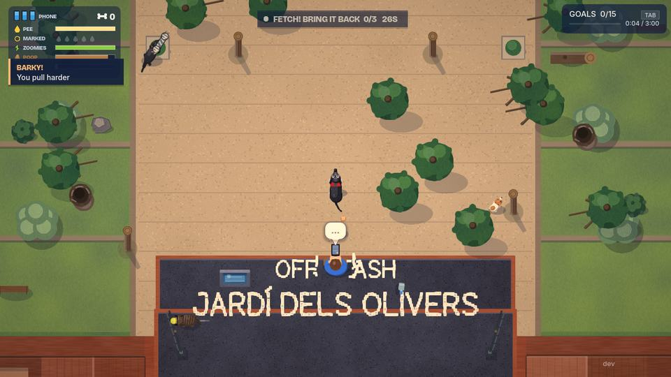

El Poble Espanyol
A walled village of copied towns
Montjuïc's walled open-air village built for the 1929 exhibition, threading stone arcades, sunlit ceramic tiles, craft workshops and regional town squares up to the quiet Jardí dels Olivers.
- Off-leash stop
- JARDÍ DELS OLIVERS (Fenced dog yard)
- Beat the clock
- Under 3:00
Screenshots



Goals (15)
- Mark 5 spots
- Have 4 good long sniffs
- Get the phone home without a scratch
- Get yourself home without a bump
- Get your business bagged
- Bring the ball back 3 times
- Scarf down 2 dropped snacks
- Wrap the leash round 4 columns
- Sniff 3 craft workshops
- Shake off under a watering can
- Land an x3 trick combo
- Swipe the glass porron off the table
- Spell LEASH
- Find the hidden pernil
- Beat the clock (under 3:00)